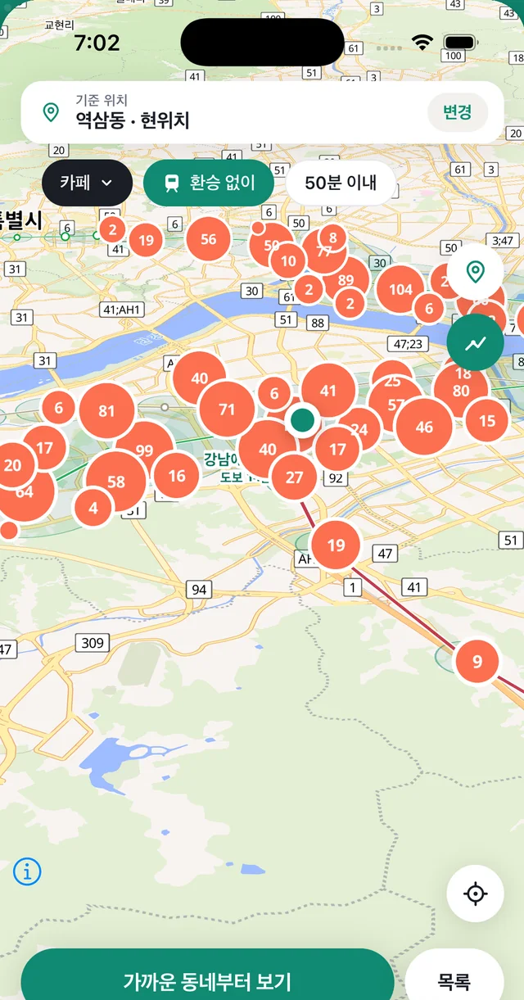
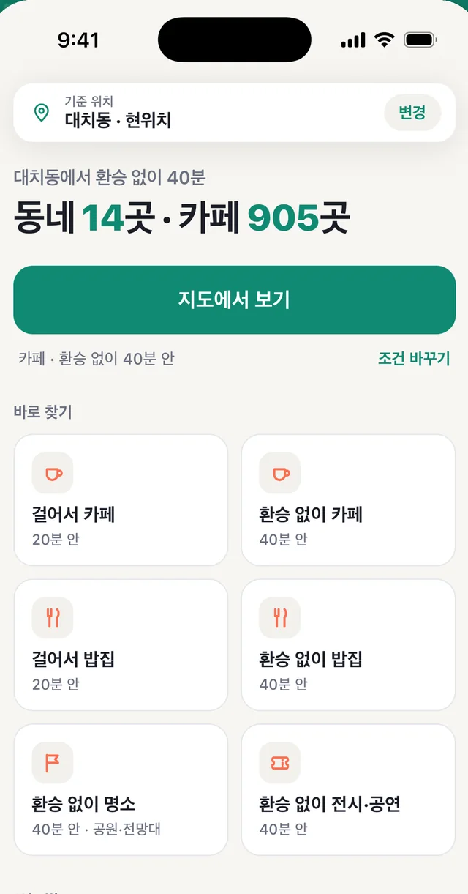
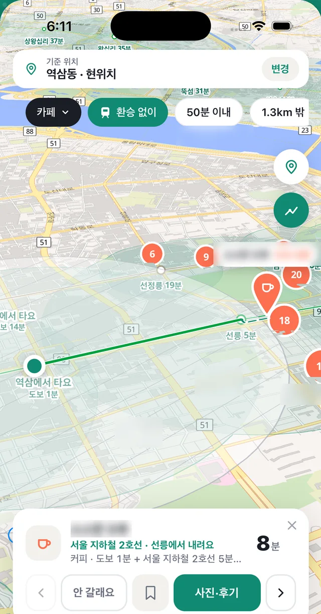
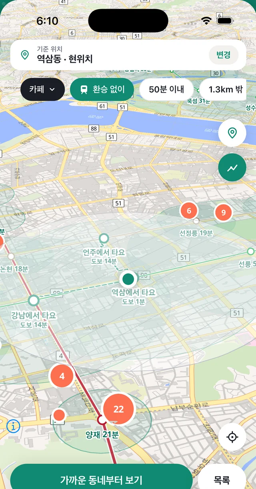
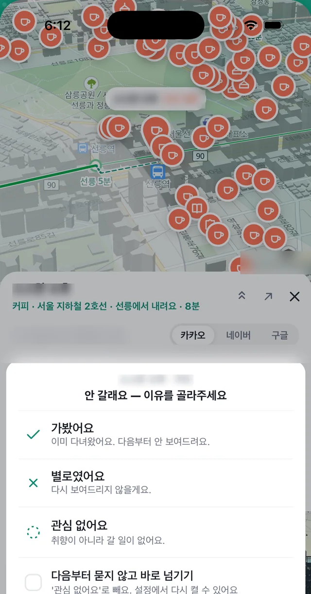

서울·수도권 지하철 649개 역
환승 없이 갈 수 있는,
아직 안 가본 곳.
출발지만 정하면, 지하철 한 번으로 닿는 역과 그 근처 카페·밥집·명소·전시가 지도에 한 번에 보입니다. 늘 가던 동네는 빼고요.
무료 로그인·계정 없음 iPhone

첫 화면이 답합니다
어디까지 갈 수 있는지, 숫자로.
출발지를 정하면 첫 줄에 결과부터 나옵니다. 생각보다 멀리 갑니다.
어떻게 되나
정하고, 보고, 고릅니다.
현위치, 또는 지도에서 직접.
업종 하나, 이동 방법 하나, 시간 상한 하나. 세 가지만 고르면 됩니다. 위치 권한을 주지 않아도 지도에서 출발지를 찍으면 됩니다.

닿는 동네가 한 번에 보입니다.
환승 없이 갈 수 있는 역과 그 근처 장소가 지도에 그려집니다. 마커의 숫자는 그 동네에 있는 곳의 수. 처음 보는 동네일수록 숫자가 눈에 걸립니다.
고민은 짧게, 한 장씩 넘기며.
후보를 카드로 한 곳씩 봅니다. 카드에는 집 앞에서 가게 앞까지 걸리는 시간이 항상 적혀 있고, 사진과 후기는 앱 안에서 바로 확인합니다. 마음에 들면 「가볼 곳」에 담아 둡니다.

늘 가던 동네는 빼고
가본 곳은 빼고, 별로면 다시는 안 나와요.
추천은 늘 아는 동네부터 채웁니다. 뚜벅맵은 빼는 쪽으로 만들어졌습니다. 뺀 만큼 낯선 곳이 남습니다.

가까운 곳 빼기
자주 가는 내 동네는 반경을 정해 지도에서 뺍니다. 늘 가던 카페가 결과에서 사라지고, 한 정거장 너머부터 보입니다.

안 갈래요, 한 번이면 끝
별로인 곳은 이유 하나 골라 표시합니다. 다음부터 그 곳은 나오지 않습니다. 이유를 묻지 않고 바로 넘기도록 바꿀 수도 있습니다.
- 가봤어요 — 이미 다녀왔어요
- 별로였어요 — 다시 보여드리지 않을게요
- 관심 없어요 — 취향이 아니라 갈 일이 없어요
시간 계산
집 앞에서 가게 앞까지.
역에서 역까지가 아닙니다. 걷는 시간, 기다리는 시간, 타고 가는 시간을 전부 더해서 한 숫자로 보여줍니다.
열차 시각표가 아니라 역 사이 거리로 계산한 추정치라 실제와 몇 분 차이가 날 수 있습니다. 버스는 아직 포함되지 않았습니다.
네 가지 업종
카페만 있는 지도가 아닙니다.
카페
걸어서 20분, 환승 없이 40분 안
밥집
점심·저녁, 사진과 후기까지
명소
공원·전망대·둘레길
문화
전시·공연·영화
지키는 것
기록은 휴대폰 안에만 있습니다.
로그인도 계정도 없습니다
열면 바로 지도입니다. 가입할 것도, 로그인할 것도 없습니다.
말고·가볼 곳은 기기에만
뺀 곳과 담아 둔 곳은 전부 휴대폰 안에 저장되고, 어디에도 전송되지 않습니다.
위치 권한 없이도 됩니다
허용하지 않으면 지도에서 출발지를 직접 찍어 씁니다. 결과는 같습니다.
자주 묻는 질문
궁금한 것
버스도 되나요?
아직 지하철만입니다. 서울·수도권 지하철 전 노선 649개 역 기준이고, 버스는 준비 중입니다.
어느 지역에서 쓸 수 있나요?
서울과 수도권입니다. 수도권 밖에서는 「걸어서」 조건으로만 쓸 수 있습니다.
소요 시간은 얼마나 정확한가요?
걷기·기다림·탑승을 합친 추정치입니다. 열차 시각표가 아니라 역 사이 거리로 계산해서 실제와 몇 분 차이가 날 수 있습니다.
위치 권한을 꼭 줘야 하나요?
아니요. 허용하지 않으면 지도에서 출발지를 직접 지정해 쓸 수 있습니다.
무료인가요?
네. 지금은 전부 무료이고, 배너 광고도 없습니다.
Android는요?
지금은 iPhone만 있습니다. Android는 반응을 보고 결정합니다.